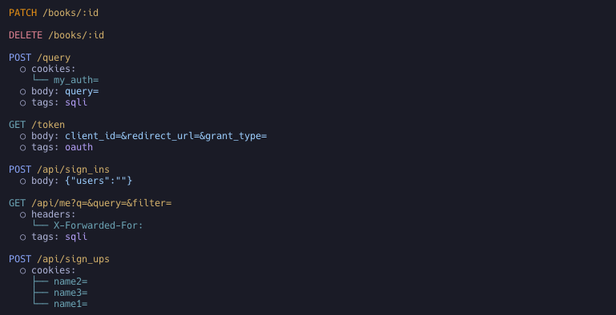

상황별 분석을 위한 Tagger 사용하기
엔드포인트와 파라미터에 설명적 태그를 자동으로 추가하여 기능과 잠재적 보안 위험(SQL 인젝션, 인증 엔드포인트 등)을 식별합니다.

사용법
Tagger는 기본적으로 비활성화되어 있습니다.
모든 태거 활성화
noir scan <BASE_PATH> -T
특정 태거만 활성화 (noir list taggers로 목록 확인)
noir scan <BASE_PATH> --use-taggers hunt,oauth
출력
태그는 엔드포인트 레벨과 파라미터 레벨 양쪽의 tags 배열에 추가됩니다. 각 태그에는 name(짧은 식별자, 예: sqli, oauth), 사람이 읽을 수 있는 description, 그리고 태그를 생성한 tagger(예: Hunt는 취약점 패턴, Oauth는 인증 흐름)가 들어갑니다.
{
"url": "/query",
"method": "POST",
"params": [
{
"name": "query",
"value": "",
"param_type": "form",
"tags": [
{
"name": "sqli",
"description": "This parameter may be vulnerable to SQL Injection attacks.",
"tagger": "Hunt"
}
]
}
],
"protocol": "http",
"tags": []
},
{
"url": "/token",
"method": "GET",
"protocol": "http",
"tags": [
{
"name": "oauth",
"description": "Suspected OAuth endpoint for granting 3rd party access.",
"tagger": "Oauth"
}
]
}
태그 분류
태거는 여러 종류의 보안 관련 신호를 다룹니다. 전체 최신 목록은 noir list taggers로 확인하세요.
-
파라미터 취약점 클래스 —
hunt는 알려진 위험 이름과 일치하는 개별 파라미터를 표시합니다(sqli,ssrf,idor,file-inclusion,command-injection등). -
프로토콜 / 인터페이스 —
graphql,soap,websocket,mcp,cors. -
인증 & 토큰 —
oauth,jwt, 그리고 프레임워크 인지 인증 태거(Spring Security, Django, Express 등). -
엔드포인트 민감도 & 용도 — 엔드포인트가 무엇을 위한 것인지 분류하여, 리뷰어가 가장 중요한 표면에 우선순위를 둘 수 있게 합니다:
pii— 개인식별정보(주민번호, 카드 정보, 연락처)를 다루는 엔드포인트. 데이터 노출 및 과도한 수집 검토 대상.admin— 관리/특권 라우트(/admin, 권한 변경 파라미터). 깨진 접근 제어 및 권한 상승의 주요 표적.payment— 결제/금융 트랜잭션 엔드포인트. 금액·가격 조작, 통화 혼동, 금융 레코드 IDOR 검토 대상.webhook— 인바운드 웹훅/콜백 엔드포인트. 서명 검증, 재전송 방어, 아웃바운드 호출의 SSRF 검토 대상.crypto— 암호화 연산 엔드포인트(암복호화, 서명, 해시, 키 관리). 약하거나 구식인 알고리즘, 패딩/서명 오라클, 정적 IV/salt 재사용, 키 노출 검토 대상.debug— 디버그·진단·내부 전용 엔드포인트(디버그 콘솔/토글, 프로파일러, actuator/management, pprof, heap/thread dump,/internalAPI). 외부에 노출되면 안 되며, 정보 노출 및 위험한 진단 동작 검토 대상.api_docs— API 문서/스키마 엔드포인트(Swagger, OpenAPI, GraphiQL, ReDoc, WSDL). 전체 API 표면을 드러내고 인증 없이 노출되는 경우가 많음. 비인증 노출 및 정보 유출 검토 대상.account_recovery— 자격증명 관리·계정 복구 엔드포인트(비밀번호 재설정/변경, 이메일 변경, MFA/OTP, 인증). 전형적인 계정 탈취 표면 — 리셋 토큰 유출, reset 링크 host-header 인젝션, 계정 열거, 레이트리밋 부재 검토 대상.file_upload— 파일 업로드 엔드포인트. 무제한 업로드, 경로 탐색, 악성 파일 처리 검토 대상.
-
프레임워크별 보호 장치 & 위험 — 프레임워크의 보안 통제와 안전한 기본값에서 벗어난 지점을 해당 엔드포인트에 표시하는 프레임워크 인지 태거. Rails(
rails_security)의 경우:csrf-protection— CSRF 검증이 비활성화(skip_before_action :verify_authenticity_token,skip_forgery_protection)되었거나 약화(protect_from_forgery with: :null_session)된 경우. Rails는 상태 변경 요청을 기본으로 보호하므로, 명시적으로 해제한 지점이 검토 대상.mass-assignment— Strong Parameters가 우회된 경우(params.permit!,params.to_unsafe_h, 또는Model.new(params[:user])처럼 가공되지 않은params[:x]해시를 모델 라이터에 전달). 공격자가 제어하는 속성 쓰기(권한 플래그, 소유권 컬럼) 검토 대상.rate-limit— Rails 8 네이티브rate_limit매크로로 스로틀링되는 액션. 무차별 대입/남용 노출을 평가할 때 유용한 맥락이며, 인증·복구 표면에서 이것이 부재하면 그 자체가 점검 포인트.
Spring(
spring_security)의 경우, 인증 태거spring_auth를 보완:csrf-protection—SecurityFilterChain에서 CSRF가 꺼진 경우. 체인 전체 비활성화(csrf().disable(),csrf(AbstractHttpConfigurer::disable), Kotlincsrf { disable() })이거나 특정 경로만 선택적으로 제외(csrf(c -> c.ignoringRequestMatchers("/api/**")))된 경우 모두 해당 상태 변경 엔드포인트(POST/PUT/PATCH/DELETE)에 표시. 무상태/토큰 API에서는 흔하지만 항상 검토 가치가 있고,securityMatcher가 있으면 그 체인 범위로 한정.cors— 핸들러/컨트롤러의@CrossOrigin애너테이션 또는 전역WebMvcConfigurer매핑(addMapping(...).allowedOrigins("*"))으로 브라우저 동일 출처 기본값에서 엔드포인트가 벗어난 경우. 와일드카드 출처(*), 특히 자격 증명과 함께 사용된 경우 과도한(permissive) 설정으로 표시.security-headers— Spring의 기본 응답 헤더 보호가 약화된 경우: 클릭재킹 보호 해제(frameOptions().disable()) 또는 헤더 라이터 전체 비활성화(headers().disable()/headers(HeadersConfigurer::disable)).input-validation—@Valid/@Validated로 요청 페이로드에 Bean Validation이 적용된 경우. 적용된 지점을 드러내면, 적용되지 않은 공백(@RequestBody를 받으면서 검증이 없는 핸들러)도 부재로 드러남.
Rust 웹 프레임워크(
rust_security, Actix-Web·Axum/tower-http·Rocket·Loco·Warp 등)의 경우 — Rust에는 암묵적 보안 기본값이 없으므로, 태거는 실제로 연결된 보호 장치(.wrap(..)/.layer(..)미들웨어 또는 Loco의config/*.yaml)를 기록하고 위험한 설정을 플래그합니다:cors— CORS 미들웨어. 허용적 설정(Cors::permissive(),CorsLayer::very_permissive(),allow_any_origin,allow_origins: ["*"])은 위험으로 표시하고, 제한된 허용 목록은 정보성으로 기록.rate-limit— 요청 스로틀링(actix-governor,tower_governor,actix-limitation, tower limit 레이어). 감싸는 스코프에 매핑되므로 보호되지 않은 라우트가 무엇인지 파악 가능.security-headers— 라우트에 설정된 강화 응답 헤더(HSTS, CSP,X-Frame-Options,X-Content-Type-Options등).body-limit— 요청 본문 크기 제한(DoS 완화). 제한이 비활성화(DefaultBodyLimit::disable())된 경우 위험으로 표시.
Go 웹 프레임워크(
go_security)의 경우, 각 엔드포인트에 매핑되는 것은 보호 미들웨어입니다. Rails와 달리 Go는 이런 보호를 기본으로 제공하지 않으므로, 그 존재(그리고 상태 변경 라우트에서의 부재)가 곧 신호입니다. 그룹 단위.Use(...), 전역 래퍼, 인라인 라우트 미들웨어로부터 Echo·Gin·Fiber·Chi 등 전반에서 탐지합니다:csrf-protection— 라우트의 CSRF 미들웨어(Echomiddleware.CSRF, Fibercsrf.New, gorilla/csrfcsrf.Protect, gin-csrf,nosurf). 쿠키 인증 기반 상태 변경 라우트에서 부재하면 검토 대상.security-headers— 응답 강화 미들웨어(Echomiddleware.Secure, Fiberhelmet, unrolled/gin-contribsecure). HSTS /X-Frame-Options/ nosniff / XSS 보호 헤더 설정.rate-limit— 스로틀링 미들웨어(EchoRateLimiter, chiThrottle, Fiber/ululelimiter, go-chi/httprate, tollbooth). 무차별 대입/남용 노출을 매핑.body-limit— 요청 본문 크기 제한(EchoBodyLimit, gin-contrib/size). DoS/자원 고갈 방어 장치.timeout— 요청 타임아웃 미들웨어(Echo/chimiddleware.Timeout, Fibertimeout). 느린 요청/자원 고갈 방어 장치.cors— CORS 미들웨어(Echomiddleware.CORS, Fiber/gin-contrib/go-chi/rscors, gorillahandlers.CORS). 알려진 permissive 생성자(cors.Default(),cors.AllowAll())는 모든 origin 허용으로 플래깅. 헤더 파라미터 기반cors태거를 보완.secure-cookies— 쿠키 기밀성/무결성 미들웨어(Fiberencryptcookie).
엔드포인트 레벨 태그는 AI 컨텍스트에도 신호로 전달되어, AI 리뷰어가 사용하는 엔드포인트별 요약을 더욱 풍부하게 만듭니다.